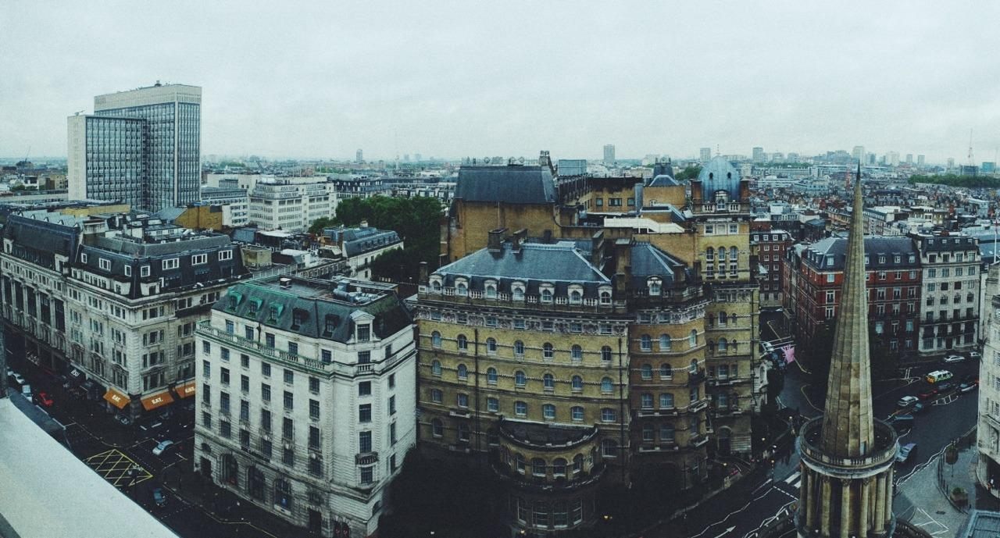

So many places still to go!
This map took surprisingly many hours to create and involved a huge array in Python, but it was a relaxing task 😌
So many places still to go!
This map took surprisingly many hours to create and involved a huge array in Python, but it was a relaxing task 😌
Yay, I have an iPad again! 😊
For years, I didn’t have a laptop and used an iPad for everything. These days, they are definitely capable enough, and I strongly disagree with those who say tablets are only for consuming, not creating.
What eventually made me replace the iPad with a laptop, though, was something rather counterintuitive: I wanted something easier to carry around. With the iPad, once you add a keyboard, a stand and a trackpad, you have a great setup for tasks like hobby coding, but it ends up being a lot to carry in your backpack for a session in a cafe.
So, a couple of years ago, I replaced it with a MacBook Air.
I love the MacBook, but there have still been situations where I have missed the iPad. Reading the newspaper or a book on a laptop just doesn’t feel right. And undeniably, a laptop is much less convenient when you want to watch an episode of a K-drama on the plane. And using a laptop in bed just isn’t very ergonomic or relaxing at all. And lastly, and ironically: the portability. For the times when I don’t need a keyboard and trackpad, it feels silly wearing a backpack just to carry a backpack just to fit the laptop
So, I’ve been thinking lately: why not both?
I waited for Apple’s launch event on Wednesday, just to make sure they didn’t release anything interesting right after I bought the iPad.
With this being a secondary device, I settled for the iPad A16, a.k.a. the standard iPad. I’m very happy with it so far. It’s definitely quick enough, the screen is perfectly fine, and unless Apple get their act together, the lack of Apple AI is almost a good thing.

Some thoughts from watching Apple’s “Surprise and Shine” event yesterday:
I’ve been an Apple fanboy for more than 20 years, and still am. I’m not going anywhere, but we’re definitely on a plateau at the moment. Technical specs keep getting more and more impressive, but there’s nothing genuinely new or exciting.
It feels as if it’s time for them to think different™ again.
I was longing for rain all summer, but now that it’s here, I’m not that keen, tbh ☔️
I saw the phrase “September is the real new year” somewhere and realised that’s genuinely how I feel.
September is when things really restart. It’s time to refocus after the summer, get back into the habits that have been slipping, or start new ones. And you get to wear your sweaters again!
In comparison, 1 Jan is just a random day in the middle of winter.
So, Happy New Year! 🎉
The throwback post with the view from Willis Tower that I posted the other day made me think of my most popular Tumblr post ever, with 6,181 reposts and 3,001 likes.
Not too sure about the filter, but people seemed to like it back then 😅

The caption was:
A rainy London, seen from the 15th-floor restaurant at Saint George’s Hotel, Langham Place.
I do miss what Tumblr was back then. It was a much friendlier place than anything we have now.
The next Apple event is on Wednesday and I will be watching, as always, even if I found them much more enjoyable when they were live, rather than just a 1-hour polished commercial.
This time, though, I’m not so much looking at what they are releasing as what they are not. I’m looking to buy an iPad very soon (the basic one), and am just waiting for the event to pass to make sure they don’t release a new one the day after I buy mine.
This blog now has a search page 🔎
It seems the idea of getting a camera is still stuck in my mind.
I obviously know that my photos are limited more by a lack of skill than by the camera, but I feel strongly that the iPhone relies too much on processing. Take a picture of the mist, and the phone boosts the colours to make it look like a clear day.
There is also something satisfying about using an actual camera. Holding it up to your eye, using a proper viewfinder, to take a picture makes it a more conscious action, different from, let’s say, scrolling Pinterest.
That said, when I say camera, I still mean a compact one, not an SLR. The best camera is the one you have with you, as they say.
When I couldn’t sleep last night, I did some further research. The result is that I’ve moved on from the idea of the Ricoh IV. I don’t think a fixed focal length, and one that requires me to get up close, is for me. Right now, I’m leaning toward the Panasonic Lumix L10 instead.
The important thing now is to make sure my desire for a camera is a real thing and will last, so I don’t end up with an expensive paperweight.
For that reason, I’ll wait until October at least before I take any action.

This photo from Willis Tower in Chicago, taken in 2018, popped up on my phone’s lock screen.
I went there on a training course and took the opportunity to combine it with a few days’ holiday with my partner. It was a good trip, and I could definitely go back sometime.
It’s a new month, so I have updated my now page.

Once I bought my first JNCO jeans, I guess it was just a matter of time before I bought another pair, and my birthday was the perfect excuse to treat myself.
This time I went for the 34” Rhinos. I thought the Twin Cannons were big, but these are MASSIVE!
Read more (+2 photos)